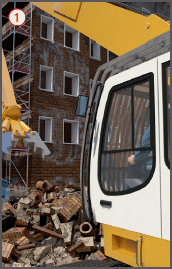
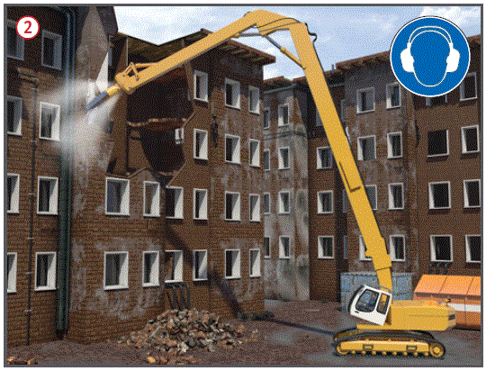
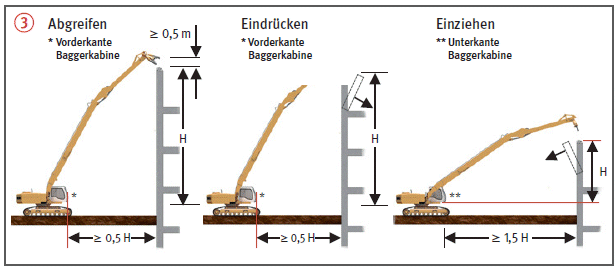
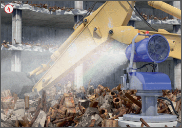

  |
Gefährdungen
- Durch unkontrollierten Einsturz von Bauteilen, Herabfallen von Bauteilen, Streuflug und/oder Umsturz von Geräten können Personen verletzt werden.
- Die Lärmbelastung kann zu Gehörschäden führen.
- Gefährdungen durch elektrische Freileitungen und erdverlegte Leitungen.
Allgemeines
- Festlegung der Abbruchreihenfolge unter Beachtung der Baukonstruktion, ggf. Abstimmung mit dem Abbruchstatiker.
- Bedienungs- und Betriebsanleitung der Hersteller für das Abbruchgerät beachten.
- Nur qualifizierte, erfahrene und unterwiesene Geräteführer einsetzen.
- Einweisung und Unterweisung der Geräteführer anhand der Abbruchanweisung.
- Vom Maschinenführer die Befähigung zum Führen und Warten der Maschinen nachweisen lassen (ein in der Bauwirtschaft anerkannter freiwilliger Befähigungsnachweis ist die ZUMBau Qualifikation).
- Gehörschutz verwenden.
Vorbereitung der maschinellen Abbrucharbeiten


Schutzmaßnahmen
- Entkernen der Gebäude vor den Abbrucharbeiten.
- Der Aufenthalt von Personen im Gefahrbereich der Abbruchgeräte sowie in den abzubrechenden Gebäudeteilen während der Abbrucharbeiten ist verboten. Als Gefahrbereich gilt der jeweilige Sicherheitsabstand zuzüglich 4,00 m nach allen Seiten um das Abbruchgerät.
- Sicherheitsabstände zwischen Geräten und abzubrechenden Bauteilen einhalten
 .
.
- Nur Abbruchgeräte mit ausreichender Reichhöhe einsetzen. Beim Abgreifen muss die Reichhöhe mindestens 0,50 m höher als die höchsten abzubrechenden Bauteile sein.
- Schutz des Geräteführers vor herabfallenden Gegenständen durch Schutzgitter (FOPS, FGPS)
 .
.
- Bei unerwarteten Gefahrensituationen sofort die Arbeiten einstellen und den Vorgesetzten informieren.
- Vorhandene elektrische Freileitungen und erdverlegte Leitungen freischalten lassen. Sollte dies nicht möglich sein, ausreichenden Sicherheitsabstand zu stromführenden Leitungen gewährleisten.
Zusätzliche Hinweise zur Durchführung der Abbrucharbeiten
- Abbrucharbeiten nach Abbruchanweisung durchführen.
- Sichere Standfläche für das Abbruchgerät gewährleisten (Keine Hohlräume! Ebener Untergrund! Kellerwände/Fundamente beachten!)
 .
.
- Statischen Nachweis für zu befahrende Keller erstellen oder Kellerräume vorher auffüllen.
- Geräteüberlastung durch Schutt, Bauteile oder durch Verfangen der Arbeitswerkzeuge vermeiden.
- Labile Bauteile vorab entfernen.
- Bauteile nicht durch Unterhöhlen oder Einschlitzen zum Einsturz bringen.
- Schuttmassen kontinuierlich abräumen, damit Wände, Stützen und Decken nicht überlastet werden.
- Staubbekämpfung durch Sprühdüse am Ausleger des Abbruchbaggers oder Staubbindeanlagen
 .
.
- Staubbekämpfung mittels C-Wasserschlauch, Standort des Bedieners außerhalb des Gefahrenbereichs.
Zusätzliche Hinweise für Rampen und Aufschüttungen
- Aufschüttungen für Abbruchgeräte maximal 10 m hoch und hohlraumfrei herstellen. Schüttgut ausreichend verdichten. Bei Aufschüttungen höher 10 m Bodengutachter/Statiker einschalten.
- Neigung der Auffahrtrampe maximal 10°.
- Plattformgrundfläche mindestens 4 m breiter und 8 m länger als das Baggerlaufwerk herstellen.
Prüfungen
- Art, Umfang und Fristen erforderlicher Prüfungen festlegen (Gefährdungsbeurteilung) und einhalten, z. B.:
- vor Beginn jeder Arbeitsschicht auf augenfällige Mängel durch den Geräteführer,
- nach Bedarf regelmäßig durch eine "zur Prüfung befähigte Person".
- Ergebnisse dokumentieren.
Arbeitsmedizinische Vorsorge
- Arbeitsmedizinische Vorsorge nach Ergebnis der Gefährdungsbeurteilung veranlassen (Pflichtvorsorge) oder anbieten (Angebotsvorsorge). Hierzu Beratung durch den Betriebsarzt.
07/2021